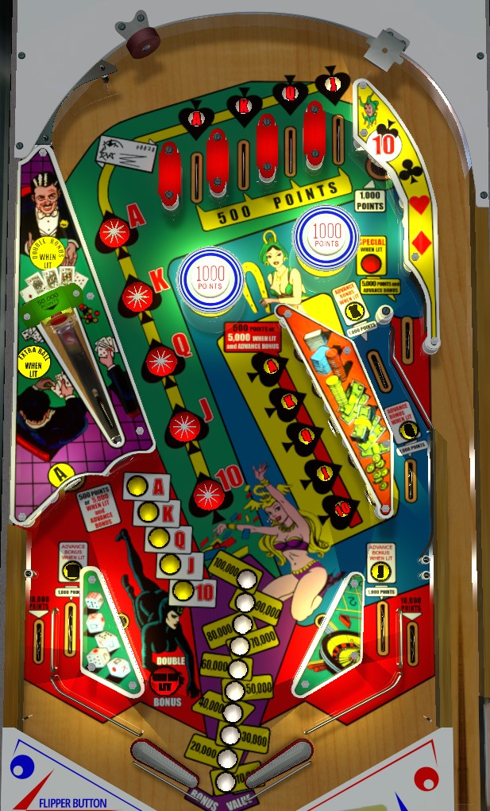

Lady Luck is the 4-player version. Fortune is the 1-player version. To my knowledge, rules and scoring are identical across both versions.
If the right flipper is ocnsistently able to cause the captive ball to hit its target, shoot that all day for 50,000 points per shot. If the captive ball is unviable or the return feed is not safe, focus on building bonus. Collecting Ace through 10 cards from the star rollovers or top lanes + upper right standup lights other lanes and standups for bonus advance. Each bonus advance is worth 10,000 points. Completing A-K-Q-J-10 lights the captive ball for double bonus and lights the free ball lane for Special. Extra ball is lit at the captive ball at certain adjustable base bonus counts.
There is no skill shot on Lady Luck. A plunged ball either goes through one of the four top lanes, scoring 500 points and one of the A-K-Q-J cards, or falls to the left of the top lanes, where it may press the star rollovers on the way to the flippers.
If you attempt to short plunge to ensure that you get an A-K-Q-J lane, be careful of any side-to-side motion that is applied to the ball while in the shooter lane; this may cause the plunge to rattle around near the point where the free ball lane joins the shooter lane about 2/3 of the way up the table. There is no penalty for this, but it can be annoying and throw off your desired plunge power.
Bumpers always score 1,000 points, unless they are not lit due to the score motor being in the middle of counting another score feature. A ball in the bumpers can take one of three routes:
Cards can be collected in two ways: the star rollovers that are neatly lined up in the game's center shot, or the four top lanes + upper right standup target. The star rollovers and upper right standup score 1,000 points, while the top lanes score 500. Make a lit rollover or target to collect it, unlighting that card.
Once a card is collected, two other features are lit. The first of the two features is a target in the 5-bank of standups. The second of the two features is the lower left standup target (Ace), the left in lane (10), the right in lane (Jack), the middle right side lane (Queen), or the upper right side lane (King). The 10, Jack, Queen, and King rollover lanes always score 1,000 points, and also add a bonus advance when lit. All targets in the 5-bank of standups, as well as the lower left Ace target, score 500 points or 5,000 plus a bonus advance when lit.
Collecting all of A-K-Q-J-10 in a single ball lights the free ball lane in the upper right for a Special (which, as far as I know, is always a free game worth 0 points), as well as lighting the captive ball for Double Bonus.
The captive ball is positioned behind a small metal bar. A full hit to the captive ball will hit the bar hard enough that the captive ball itself goes up its mini-ramp and hits the standup target behind it. This target always scores 50,000 points and causes the game's bell to ring twice. If A-K-Q-J-10 is collected, hitting the captive ball target lights double bonus.
Extra balls can be earned on Lady Luck in two ways. Way #1 is to simply reach a predetermined score threshold, similar to a replay score. Way #2 involves hitting the captive ball when it is lit for extra ball. There are 3 settings for how frequently extra balls can be earned.
There is always a maximum of 1 extra ball per ball in play.
There are 3 additional settings for exactly when the captive ball is lit for extra ball: it can be lit at 100,000 and 110,000 base bonus, or it can be lit at 120,000 and 130,000 base bonus, or it can be lit at 140,000 and 150,000 base bonus. The extra ball unlights once collected or once the base bonus is advanced past the operator-determined range.
Lady Luck has a conventional in/out lane setup. Notice that the tops of the slingshots are significantly higher than the in/out lane separator rail. In lanes score 1,000 points and can be lit for a bonus advance by collecting the 10 (left) or Jack (right). Out lanes always score 10,000 points.
Bonus is advanced by making rollover lanes or standup targets that have been lit for advance bonus by collecting the corresponding A-K-Q-J-10 card. Each bonus advance is worth 10,000 points in base bonus. The first step of bonus is never given for free: it is possible to drain with 0 points in the bonus. The 5-bank of standup targets and the lower left Ace standup target can be set by the operator to give 2 bonus advances when lit instead of 1. Max base bonus can be set to either 100,000 or 150,000 points. Bonus can be doubled by completing the A-K-Q-J-10 set then shooting the captive ball. Double bonus is never given for free. There is no mid-ball bonus collect, and neither base bonus nor multiplier can be carried from ball to ball.